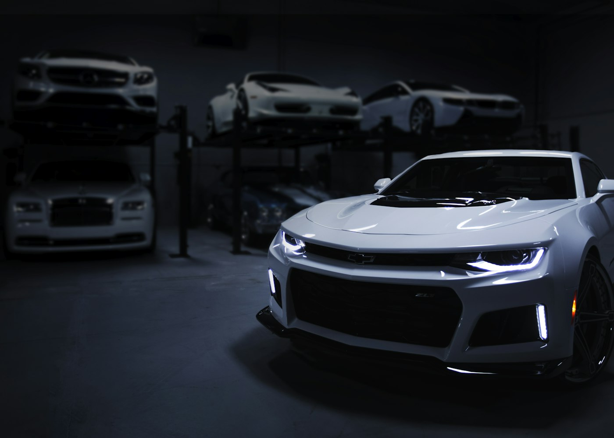

Lavagem técnica
Cuidado seguro em cada superfície.
ESTÉTICA AUTOMOTIVA DE PRECISÃO
Proteção, brilho e acabamento para quem enxerga cada detalhe.
O que fazemos
Conheça as opções e escolha o que faz sentido para você.
Cuidado seguro em cada superfície.
Correção e profundidade no brilho.
Proteção e facilidade na manutenção.
Interior limpo e renovado.
Proteção para áreas mais expostas.
Acabamento de longa duração.
Antes / depois
Deslize para comparar o efeito visual demonstrativo.

Comparação de tratamento visual sobre a mesma fotografia. Não representa resultado real de serviço.
Por dentro
Imagens ilustrativas do universo deste projeto.

Como funciona
Inspecionamos pintura e interior.
Indicamos o tratamento ideal.
Você vê o cuidado em cada detalhe.
Nossa essência
A BlackCar combina técnica, produtos selecionados e atenção obsessiva aos detalhes. Cada veículo recebe diagnóstico próprio antes de qualquer procedimento.
Em destaque
Lavagem técnica e cuidado interno.
Polimento e higienização completos.
Vitrificação ou PPF com avaliação.
Quem viveu, recomenda
“O acabamento da pintura ficou acima do que eu imaginava. Atendimento impecável.”
Bruno V., cliente
Antes de começar
Depende do serviço e do estado do veículo; informamos após avaliação.
Alguns serviços exigem permanência de um ou mais dias.
Vamos conversar
Deixe seus dados para simular o contato ou fale agora com nossa equipe.
Conversar no WhatsApp ↗